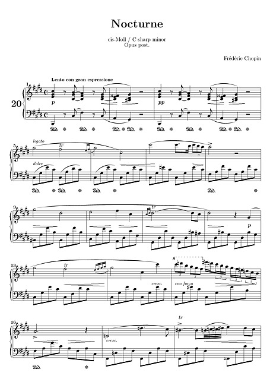

Thông tin tác phẩm
- Nhà soạn nhạc Frédéric Chopin
- Sáng tác 1830 – 1832
- Thể loại Nocturne
- Nhạc cụ Piano
- Thời kỳ Lãng mạn

“Một đêm yên lặng được kể lại
bằng những nốt nhạc dịu dàng và cô đơn.”
“Nocturne Op.9 No.2”
mở đầu bằng một giai điệu piano rất nổi tiếng:
phần tay phải ngân lên mềm mại,
chậm rãi và đầy chất hát,
trong khi tay trái lặp lại nhịp đệm đều đặn như nhịp thở.
Đoạn nhạc ấy không dữ dội hay phức tạp,
nhưng lại tạo cảm giác như
một người đang độc thoại trong đêm —
nhẹ nhàng,
cô độc
và đầy hồi tưởng.
Những nốt nhạc được kéo dài,
luyến nhẹ và chuyển động uyển chuyển
khiến giai điệu mang vẻ đẹp rất mong manh.
Ở các lần lặp sau,
Chopin bắt đầu thêm những đoạn trang trí tinh tế,
làm giai điệu trở nên cảm xúc hơn,
như thể cùng một ký ức
nhưng mỗi lần nhớ lại
đều mang một sắc thái khác nhau.
Chính sự thay đổi nhỏ ấy
tạo nên chiều sâu đặc biệt cho tác phẩm.
Đoạn mở đầu này ngày nay
được xem là một trong những giai điệu piano
nổi tiếng và dễ nhận ra nhất thế giới,
đồng thời thể hiện rất rõ phong cách của Chopin:
dịu dàng,
tinh tế
và giàu cảm xúc nội tâm.